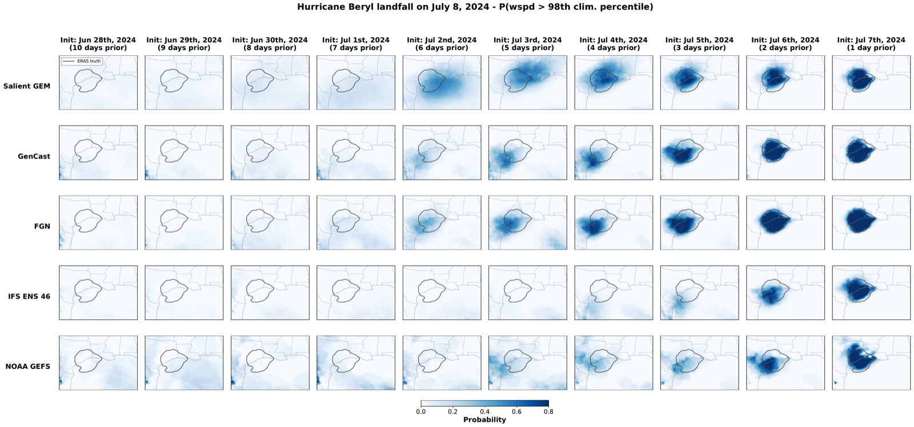
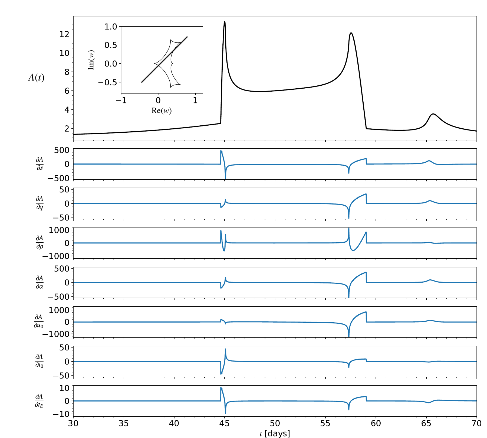

Research
AI models for weather forecasting
Weather forecasting is going through a revolution. For most of a century it meant solving the partial differential equations of atmospheric physics on massive supercomputing clusters. AI models trained on decades of past weather have upended that: they produce in minutes on a single GPU what used to take hours on a supercomputer, and now match or surpass the physical models on accuracy. Weather is chaotic, so a single prediction is rarely enough; what matters are the probabilities we assign to each outcome. At Salient Predictions I build forecasting models that push the compute/accuracy frontier, reaching top-tier accuracy at a fraction of the cost and staying simple enough to train quickly, aimed at the quantities people actually act on, like temperature extremes and heavy rainfall.
A recent example is GEM-2, which my colleagues and I trained to predict the global state of the atmosphere jointly with these decision-relevant variables. At 0.25° resolution and ~19 H100-days of training compute, it outperforms operational numerical weather prediction and is competitive with AI models that cost 20–100× more to train.

Reconstructing 2D maps of planetary bodies from 1D light curves
Most planets and moons are too far away to resolve as anything more than a point of light. All we can measure is their total brightness, a single number that changes over time as the body rotates and as other bodies pass in front of it. This one-dimensional light curve still encodes the two-dimensional pattern of bright and dark features on the surface, but reading the map back out is ill-posed: many different surfaces produce the same light curve. With Rodrigo Luger and Dan Foreman-Mackey at the Flatiron Institute, I built probabilistic models that infer surface maps from these light curves. The same inverse problem applies to bodies throughout the Solar System and to exoplanets around other stars. We tested our methods on a Solar System body, where spatially resolved imaging gives independent ground truth: from two occultation light curves, we recovered the locations of active volcanoes on Jupiter's moon Io (Bartolić et al. 2022, PSJ).

Gravitational microlensing
When a massive object passes almost exactly in front of a more distant star, its gravity bends and magnifies the star's light, producing a transient brightening that lasts anywhere from hours to months. This is a gravitational microlensing event. We see nothing of the lens itself; the signal is entirely in the lensed light of an unrelated background star. Microlensing therefore detects objects by their gravity rather than by any light they or a host star emit, which lets it reach things other methods cannot: cold planets on wide orbits, free-floating planets with no host at all, and isolated black holes. Recovering the parameters that describe the lens from the light curve is the hard part. The models are badly degenerate, and a system of two or more lenses has sharp caustics: curves that produce a spike in magnification whenever the source crosses them. Tiny changes in the model parameters shift where those crossings fall, which leaves the likelihood function jagged and multi-modal, with narrow peaks separated by wide low-probability gaps. This is close to the worst case for statistical inference in general, where most methods assume a smooth, well-behaved likelihood function.
During my PhD I worked on both sides of this problem. I wrote caustics, an open-source, differentiable code built on JAX that computes the magnification for single, binary, and triple-lens systems, the first microlensing code to support automatic differentiation throughout. On the inference side, instead of reporting a single best-fit solution I treated the competing degenerate modes as a model-comparison problem, weighting them by how well they predict held-out data, and I showed that the standard methods for fitting caustic-crossing events often fail to converge in the first place. Upcoming surveys like Rubin, Roman, and Euclid will record tens of thousands of events, and making sense of them at that scale calls for analysis methods that are both reliable and automated.

Publications
- P. Rauba, V. Cikojević, F. Bartolić, S. Levang, T. Dickinson, C. Dwelle (2026). Probabilistic Transformers for Joint Modeling of Global Weather Dynamics and Decision-Centric Variables. arXiv:2601.03753
- F. Bartolić, R. Luger, D. Foreman-Mackey, R. R. Howell, J. A. Rathbun (2022). Occultation mapping of Io's surface in the near-infrared I: Inferring static maps. The Planetary Science Journal, doi:10.3847/PSJ/ac2a3e
- R. Luger, E. Agol, F. Bartolić, D. Foreman-Mackey (2022). Analytic Light Curves in Reflected Light: Phase Curves, Occultations, and Non-Lambertian Scattering for Spherical Planets and Moons. arXiv:2103.06275
- N. Golovich, W. Dawson, F. Bartolić, et al. (2020). A Reanalysis of Public Galactic Bulge Gravitational Microlensing Events from OGLE-III and IV. arXiv:2009.07927
- V. Bozza, E. Bachelet, F. Bartolić, T. M. Heintz, A. R. Hoag, M. Hundertmark (2018). VBBinaryLensing: a public package for microlensing light curve computation. MNRAS, 479, 5157